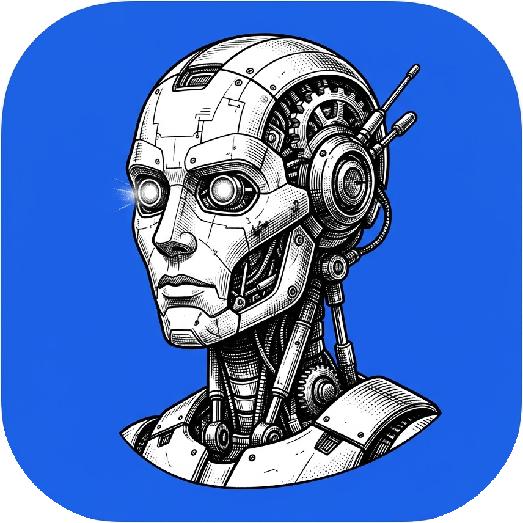

CNN
FashionVision AI
Comprende cómo aprende la visión artificial, luego
entrena tu propia red.
Solución integral de visión por computadora basada en redes neuronales convolucionales (CNN). Diseñada para clasificar prendas textiles con 90.15% de precisión, inspeccionar mapas de activación y contrastar similitud vectorial en tiempo real sobre Fashion-MNIST.
MODELO CNN: 422,538 PARÁMETROS • KERAS & TENSORFLOW 2.x • LATENCIA < 18 MS
Lanzar aplicación en vivo en Streamlit Cloud (rn-fucn.streamlit.app)
90.15%
Test Accuracy
10 Clases
Categorías de Moda
< 18 ms
Latencia de Inferencia
70,000
Muestras Evaluadas